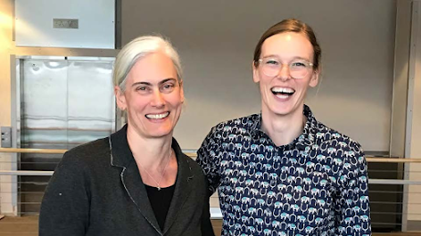
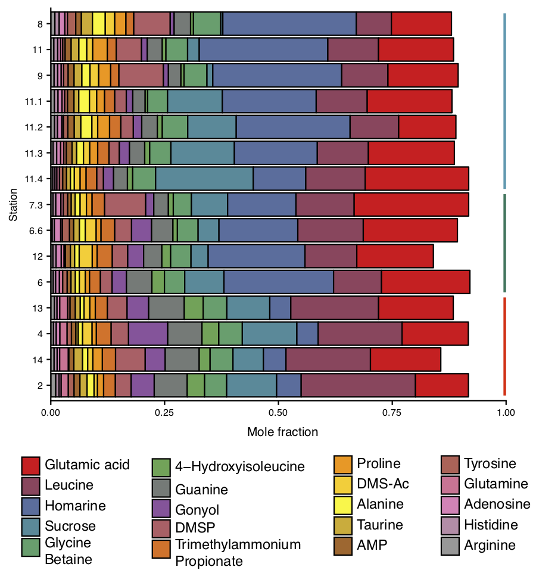

About me
Microbial and Chemical Oceanographer
I am a Postdoctoral Fellow at the University of Washington working with Randie Bundy and Anitra Ingalls and a participant in the SCOPE Gradients project.
My research interests sit at the interface of microbial ecology and analytical chemistry, with an emphasis in using advanced mass spectrometry tools to elucidate microbial processes in natural systems.
I believe open science is better science . I actively deposit raw data from my studies to repositories on Metabolights or Metabolomics Workbench . I am happy to share scripts for data processing or visualization - I'm trying to be better about using GitHub . Links to raw data and scripts are next to associated publications .
My CV is here.
News
Sulfonates in the ocean
August 2019: Hannah Hickey of UW News wrote a great summary of the new collaborative paper spearheaded by Dr Bryndan Durham. This work combined transcriptomics and metabolomics in complex marine systems to uncover how microbes use sulfur.

UNOLS Chief Scientist Training Cruise
June 2019: I headed back to Hawaii to participate in the UNOLS Chief Scientist Training Cruise on my old friend the R/V Kilo Moana. A fantastic cruise and phenomenal group of future leaders in oceanography. We even saw a whale shark!
Gradients 3.0 Success!
May 2019: I participated in the third cruise of the SCOPE Gradients project aboard the R/V Kilo Moana. Here's Angie Boysen helping deploy the CTD. Excited to get after these samples in the lab!
Simons Foundation Postdoctoral Fellow in Marine Microbial Ecology
September 2018: I was awarded a Simons Foundation Postdoctoral Fellowship in Marine Microbial Ecology to work with Dr. Randie Bundy. I'll be delving into the trace metal world and be looking at mechanisms of trace metal recycling by marine bacteria.

PhDone!
March 2018: I've been working with Dr. Anitra Ingalls (left) since 2011, we look pretty stoked after I successfully defended my PhD.

Vitamin B-12, and a knockoff version, create complex market for marine vitamins
January 2017: University of Washington press release by Hannah Hickey on our paper pubished in Proceedings of National Academy of Sciences.
Upcoming and Recent Presentations
Patterns in metabolite pools show that phytoplankton leave a taxon-specific signature on labile carbon in surface ocean
May 2020: Woods Hole Oceanographic Institution, Marine Chemistry and Geochemistry Seminar , remote.
Chemical and genetic evidence point to arseno-metabolites underpinning the marine arsenic cycle
Feb 2020: Ocean Sciences Meeting in San Diego, California.
Evidence and implications of arsenic removal from the surface ocean via complex biomolecules
Oct 2019: University of Rhode Island Graduate School of Oceanography in Narragansett, Rhode Island.
 Environmental metabolomics across natural oceanographic gradients expose under-appreciated compounds engaged in multiple elemental cycles
Environmental metabolomics across natural oceanographic gradients expose under-appreciated compounds engaged in multiple elemental cycles
Feb 2019: ASLO Aquatic Sciences Meeting in San Juan, Puerto Rico.

New insights into microbial carbon exchange through metabolomics.
November 2018: Lecture Series Environmental Geology & Geochemistry Seminar (EGGS) in the Department of Geosciences at Princeton University.

Power and Promise of Direct Measurements of Metabolites in Marine Systems
October 2018: Dissertations in Chemical Oceanography (DISCO) XXVI in Kona, Hawaii.
Publications
| 2020 | Dawson, H.M., Heal, K.R., Boysen, A.K., Carlson, L.T., Ingalls, A.E., Young, J.N. Potential of temperature- and salinity-driven shifts in diatom compatible solute concentrations to impact biogeochemical cycling within sea ice. Elementa: Science of the Anthropocene. 8, 25. doi: 10.1525/elementa.421. pdf. |
| 2019 | Lu, X., Heal, K.R., Doxey, A., Ingalls, A.E., Neufeld, A. Metagenomic and chemical characterization of soil cobalamin production. ISME Journal. 14, 53–66. doi: 10.1038/s41564-019-0507-5. pdf. |
| 2019 | Durham, B.P., Boysen A.K., Carlson, L.T, Groussman, R.D., Heal, K.R., Cain, K.R., Coesel, S., Morales, R.L., Morris, R. M., Ingalls, A.E., Armbrust, E.V. Sulfonate-based networks between eukaryotic phytoplankton and heterotrophic bacteria in the surface ocean. Nature Microbiology. 4, 1706–1715. doi: 10.1038/s41564-019-0507-5. pdf. |
| 2019 | Heal, K.R., Kellogg, N.A., Carlson, L.T, Lionheart, R., Ingalls, A.E. Metabolic consequences of cobalamin scarcity in diatoms as revealed through metabolomics. Protist. 3, 328-348. doi: 10.1016/j.protis.2019.05.004. pdf. raw data. |
| 2018 | Heal, K.R.*, Qin, W.*, Amin, S.A., Armbrust, E.V., Devol, A.H., Moffett, J.W., Stahl, D.A., Ingalls, A.E. Unexpected accumulation of NO2-cobalamin in ammonia-oxidizing archaea and in the oxygen deficient zone of the Eastern Tropical North Pacific. Environmental Microbiology Reports. *equal contribution. doi: 10.1111/1758-2229.12664. pdf. |
| 2018 | Boysen A.K.*, Heal, K.R.*, Carlson, L.T, Ingalls A.E. Best-matched internal standard normalization in liquid chromatography-mass spectrometry as applied to environmental metabolomics. Analytical Chemistry. *equal contribution. doi: 10.1021/acs.analchem.7b04400. pdf. scripts. |
| 2018 | Horak, R.E.A., Qin, W., Bertagnolli, A.D., Nelson, A., Heal, K.R., Han, H., Heller, M., Schauer, A., Jeffrey, W., Armbrust, E.V., Moffett, J.W., Ingalls A.E., Stahl, D.A., Devol, A.H. Relative impacts of light, temperature, and reactive oxygen on thaumarchaeal ammonia oxidation in the North Pacific Ocean. Limnology and Oceanography. doi: 110.1002/lno.10665. pdf. |
| 2017 | Qin, W., Heal, K.R., Ramdasi, R., Kobelt, J., Martens-Habbena, W., Bertagnolli, A.D., Amin, S.A., Walker, C.B., Urakawa, H., Konneke, M., Devol, A.H., Moffett, J.W., Armbrust, E.V., Jensen, G.J., Ingalls A.E., Stahl, D.A. Nitrosopumilus maritimus gen. nov., sp. nov., Nitrosopumilus cobalaminogenes gen. nov., sp. nov., Nitrosopumilus oxyclinae gen. nov., sp. nov., and Nitrosopumilus ureaphilus gen. nov., sp. nov., four marine ammonia-oxidizing archaea of the phylum Thaumarchaeota. International Journal of Systematic and Evolutionary Microbiology. doi: 10.1099/ijsem.0.002416. pdf. |
| 2017 | Qin, W., Amin, S.A., Lundeen, R.A., Heal, K.R., Martens-Habbena, W., Turkarslan S., Urakawa, H., Costa, K.C., Hendrickson, E.L., Wang, T., Beck, D.A.C., Tequia, S.M., Taub, F., Holmes, A.D., Vajrala, N., Berube, P.M., T.M., Moffett, J.W., Devol, A.H, Baliga, N.S., Arp, D.J., Sayavedra-Soto, Hackett, M., Armbrust, E.V., Ingalls, A.E, Stahl, D.A. Stress response analyses of a marine ammonia-oxidizing archaeon informs physiological status of environmental populations. ISME Journal. doi: 10.1038/ismej.2017.186. pdf. |
| 2017 | Heal, K.R., Qin, W., Ribalet, F., Bertagnolli, A.D., Coyotes-Maetstas, W., Hmelo, L.R., Moffett, J.W., Devol, A.H., Armbrust, E.V., Stahl, D.A., Ingalls, A.E. Two distinct pools of B12 analogs reveal community interdependencies in the ocean. Proceedings of the National Academy of Sciences. doi: 10.1073/pnas.1608462114. pdf. |
| 2015 | Amin, S.A., Hmelo, L.R., van Tol, H.M., Durham, B.P., Carlson, L.T., Heal, K.R., Morales, R.L., Berthiaume, C.T., Parker, M.S., Djunaedi, B., Ingalls, A.E., Parsek, M.R, Moran, M.A., Armbrust, E.V. Interaction and signalling between a cosmopolitan phytoplankton and associated bacteria. Nature. doi: 10.1038/nature14488. pdf. |
| 2014 | Heal, K.R., Carlson, L.T., Devol, A.H., Armbrust, E.V., Moffett, J.W., Stahl, D.A., Ingalls, A.E. Determination of four forms of vitamin B12 and other B vitamins in seawater by liquid chromatography/tandem mass spectrometry. Rapid Communications in Mass Spectrometry. doi: 10.1002/rcm.7040. pdf. |
| 2013 | Martin, M.Z., Mayes M.A., Heal, K.R., Brice, D.J., Wullschleger, S.D. Investigation of laser-induced breakdown spectroscopy and multivariate analysis for differentiating inorganic and organic C in a variety of soils. Spectrochimica Acta Part B. doi: 10.1016/j.sab.2013.05.026. |
| 2012 | Mayes, M.A., Heal, K.R., Brandt, C.C., Phillips, J.R, Jardine, P.M. Relation between soil order and sorption of dissolved organic carbon in temperate subsoils. Soil Science Society of America Journal. doi: 10.2136/sssaj2011.0340. |
Contact
Feel free to contact me with any questions